01
夜间通话 / 吉米与金
提醒还没说清，他先挂断了电话。
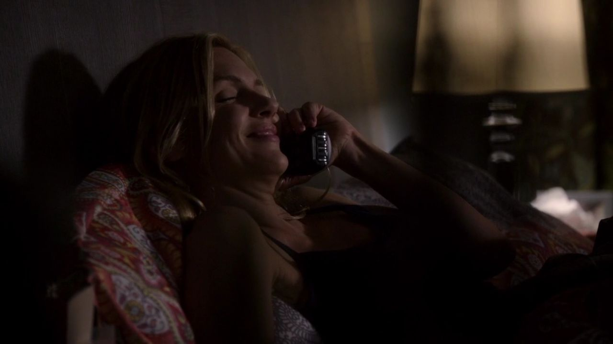
剧情事实担心纳乔会对凯特曼家下手，吉米给金打电话，间接提醒存在风险，又在说清之前中止谈话。 [1][2]
这一场为什么重要 · 个人解读
他希望有人采取保护行动，却不想把自己知道危险的来路交代清楚。于是善意与自保挤在同一段含糊的话里。金不可能从没有得到的信息中替他完成判断，这场电话也没有真正卸掉他的责任。
因此 →没有说完的提醒，变成他决定自己打去的警告。

风骚律师 · 第一季第 03 集
一个没有署名的警告。
一场不像绑架的失踪。
剧透边界 截至 S01E03，含本集结尾
10 个剧情节点 · 7 位人物 · 04 组冲突纳乔留下的提议没有变成吉米答应的工作，却变成他无法忽视的危险。他想提醒凯特曼一家，又不愿把知道的一切交给警方。第二天，一家人消失，纳乔被捕，吉米便必须为自己相信的版本找到证据。靠嘴说服别人的律师，这一次得亲自出去寻找。
读这一集，跟住三件事警告如何变成压力 / 失踪里少了什么 / 为什么没有走远
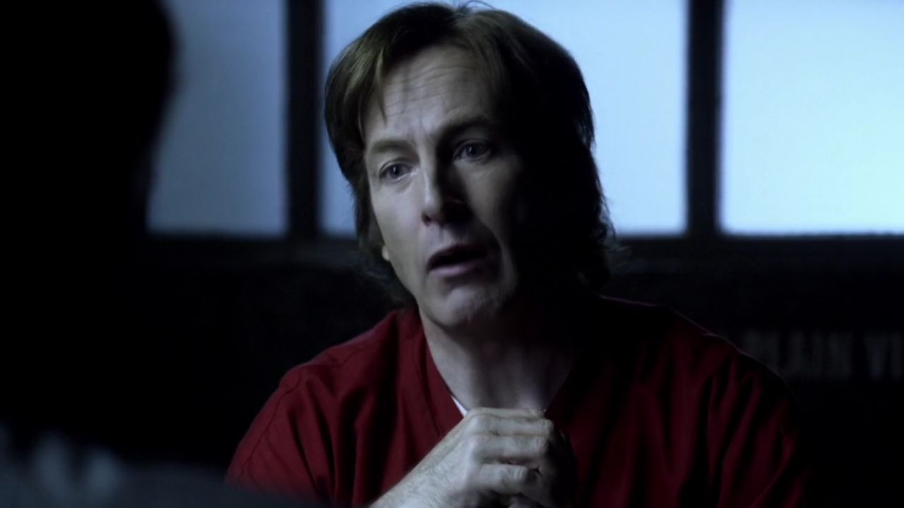
三幕梳理本集。每一场都区分剧情事实与个人解读，把行动、动机和后果连起来。
想帮忙，又不能说得太清。

剧情事实担心纳乔会对凯特曼家下手，吉米给金打电话，间接提醒存在风险，又在说清之前中止谈话。 [1][2]
他希望有人采取保护行动，却不想把自己知道危险的来路交代清楚。于是善意与自保挤在同一段含糊的话里。金不可能从没有得到的信息中替他完成判断，这场电话也没有真正卸掉他的责任。
因此 →没有说完的提醒，变成他决定自己打去的警告。
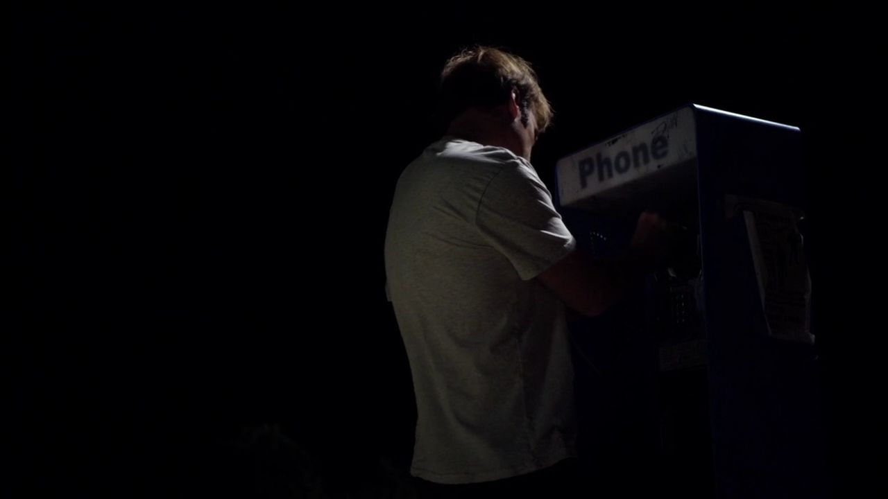
剧情事实吉米匿名致电凯特曼夫妇，提醒有人可能冲着他们的钱来。夫妇随后注意到屋外有人监视。 [1][2]
匿名使他能够行动，也让警告变成没有来路、难以核实的恐惧。他想控制信息暴露到什么程度，却不能控制听见警告的人会怎样回应。这样的帮助并不因为出于好意，就一定走向他预计的安全结果。
因此 →第二天，房子里的日常突然空了。
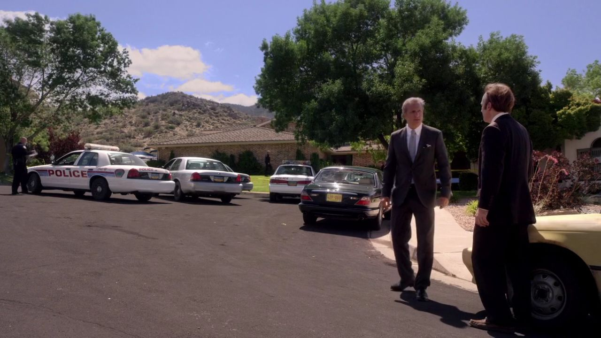
剧情事实金告诉吉米凯特曼一家出了事。吉米赶到警察围住的住宅，得知一家人失踪，便担心纳乔绑走了他们。 [1][2]
“知道某人起过歹意”很容易变成“相信这次一定是他”。本集先让观众和吉米一起落入这条顺手的因果，再逐步检验它。危险提议是真的，失踪也是真的，但两件事是否由同一个人完成，还需要另外的证据。
因此 →吉米找不到纳乔，却等来了警方和他的辩护请求。
善意进入现实后，产生了未预料的反应。
把最顺手的因果重新拆开。
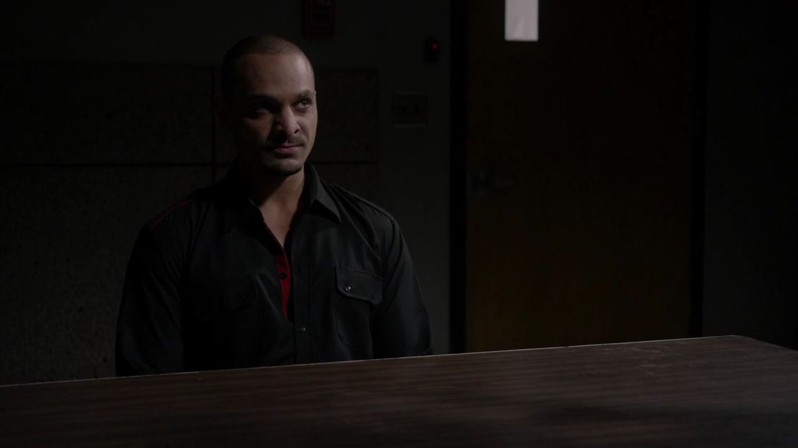
剧情事实纳乔承认监视过凯特曼家，却否认绑架。他要求吉米帮助自己脱身，并怀疑吉米泄露了计划；吉米因此面临直接威胁。 [1][2]
纳乔的无辜有一个明确范围：没有实施这次绑架，不等于没有抢劫念头。吉米替他争取查清事实，也不意味着赞同先前计划。剧集把“我不喜欢这个人”与“这项指控是否准确”拆开，辩护工作的必要由此变得具体。
因此 →单靠当事人的否认，无法让警方接受另一种解释。
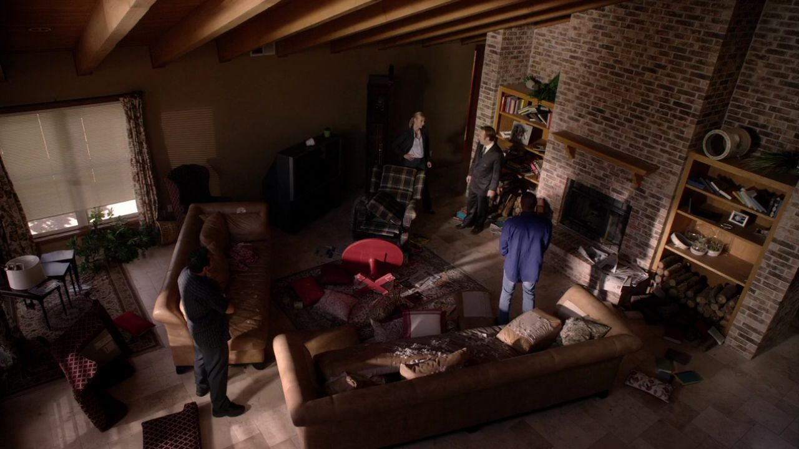
剧情事实金带吉米查看住宅。除了闯入般的凌乱，吉米留意到孩子平常依赖的娃娃不见了，对真正的绑架产生怀疑。 [1][2]
解释现场不只看存在的痕迹，也看本应留下的东西。娃娃改变了一个重要问题：这家人是被迫突然离开，还是带着熟悉的安慰物自行离开？它不足以单独证明全部经过，却能让另一种假设开始成立。
因此 →他把“有人绑走他们”改成了“也许他们自己藏起来”。
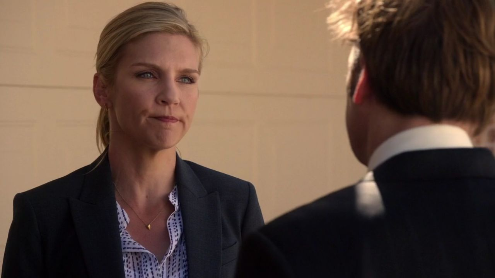
剧情事实吉米向金提出一家人可能自行躲藏，并承认自己曾匿名示警。金仍担心纳乔和失踪家庭的处境。 [1][2]
承认警告使吉米从旁观的推理者变成事件的参与者。他的版本也可能保护自己，所以金的怀疑不是缺乏友谊。关系中的信任不能代替事实查证；正因为她在意，他才更难只靠一个漂亮结论把事情带过去。
因此 →他必须找到一家人，才能使这个解释超出自我辩护。
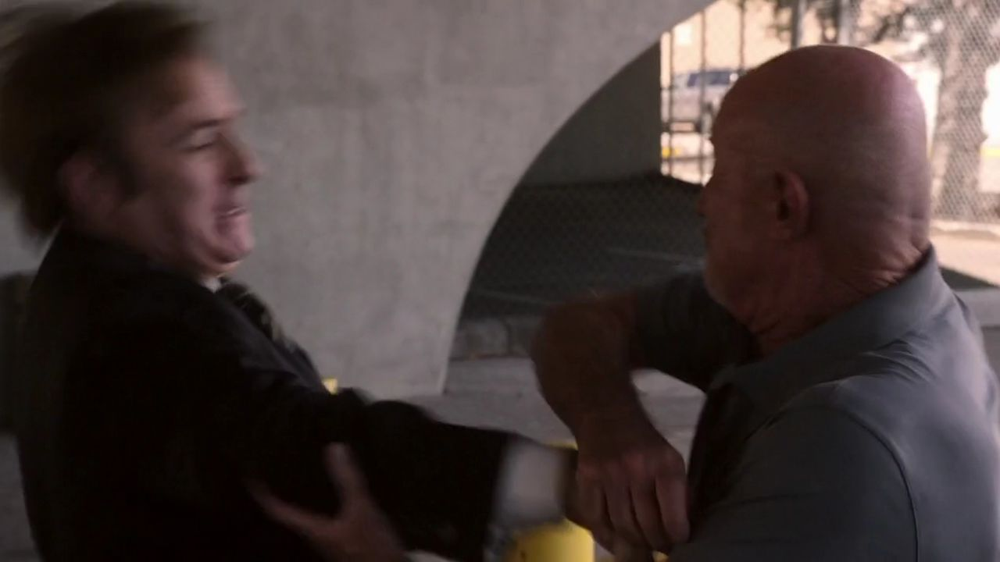
剧情事实吉米与迈克因停车验证发生冲突，动手后被制服。警方希望迈克提出袭击控诉，以此迫使吉米配合调查。 [1][2]
吉米急于处理更大的危险，却把小小的栏杆也看成针对自己的阻碍。他一动手，情绪就变成别人能够使用的筹码。这里没有口才失灵后的英雄爆发，而是一个焦虑的人把处境进一步弄糟。
因此 →迈克是否追究，开始影响警方怎样向吉米施压。
娃娃、口供和一次停车冲突，让吉米需要别人的经验。
走出去，找到能够核对的人。
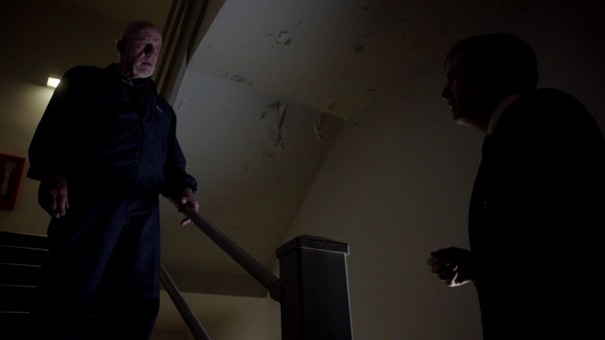
剧情事实迈克最终不追究吉米，并表示自行躲藏的推测说得通。他提起在费城办案的经验，判断这家人可能还在住处附近。 [1][2]
他提供的不是关系上的袒护，而是对细节与行为习惯的判断。两人的关系因此出现第一处变化：从只核验贴纸，到能够讨论某个案子。愿意听不要求先成为朋友，专业上的认可也不必伪装成亲近。
因此 →一个具体经验，让搜索从抽象的远方缩回到附近。
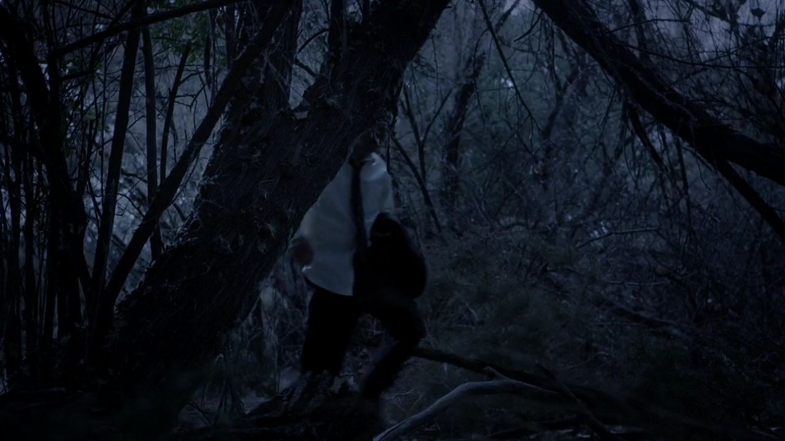
剧情事实吉米沿凯特曼家附近的荒地搜索，逐步发现一家人露营的踪迹，最终找到他们藏身的帐篷。 [1][2]
前面的推理需要脚步来完成。路并不华丽，寻找也没有立刻的掌声；但这是无需制造假事故就能证明能力的工作。迈克提供方向，吉米付出时间，两种能力在这里第一次形成实际互补。
因此 →失踪家庭被找到了，另一件事实也即将露出来。
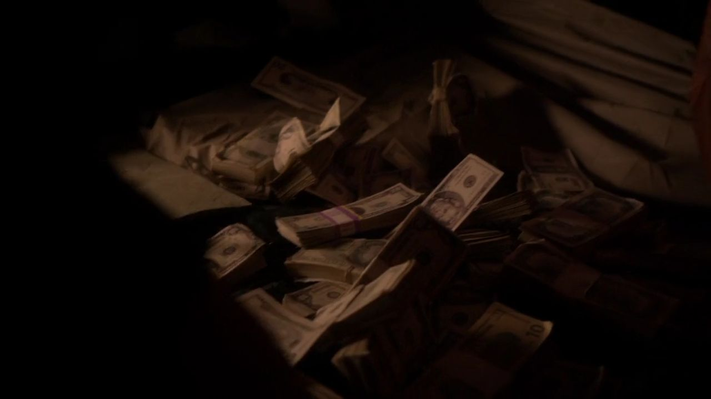
剧情事实吉米在帐篷里找到凯特曼一家。劝他们回去时，一只旅行袋被拉开，大量现金掉了出来。 [1][2]
此前“有没有绑架”的问题得到回答，新的问题却随钱落地：这一家人为什么要藏，现金又意味着什么？吉米此刻拥有能改变案件的信息，也面对可能改变自己处境的诱惑。本集把选择留在发现之后，不提前写下他下一集怎样处理。
因此 →安全问题暂时落地，钱的问题才刚刚打开。
营地回答失踪问题，现金带来新的选择。
切换故事阶段，再点击角色，查看本集行动、个人诉求与关系变化。
吉米试图避免一家人受害，同时隐藏警告的来路。
关系图只归纳本集已展示的行动与联系，不将后续动机提前写入。 人物照统一登记并跨集复用；阶段说明含个人解读，连线不表示每个人已知道全部信息。
三条线索相接，是剧情中的调查路径；不是可套用到所有真实案件的规律。
个人解读房间里没有的东西，与山上带着的日常物品互相回答。吉米的长处在这里不只是不停说，而是能够把别人忽略的生活习惯放进解释，再用实际寻找检验它。
四组冲突深读 · 以下为个人解读，事实边界随卡片标注。
吉米不是不知道可以把危险说清，他是担心说清之后自己将处于什么位置。因此，一次提醒被拆成间接试探和匿名电话。善意真实存在，想保全自己也真实存在。
难处在于，听者会依自己的处境作决定。警告促使一家人躲藏，吉米不能再只靠“我本来想帮忙”评价后果。后半集的寻找，是他重新介入并承担这份不确定性的方式。
事实边界：一家人的躲藏由剧情揭示，不将纳乔的想法等同已实施绑架。
英文短句核对非官方对白转录；中文为本页自译，潜台词属于个人解读。
Maybe the Kettlemans kidnapped themselves.也许凯特曼一家“绑架”了自己。中文自译
娃娃等现场细节让吉米提出另一种失踪解释。
措辞听来荒谬，关键却是让人停止把一个推测当成唯一的事实。
本页选用短句共 15 个英文词。配图呈现相应人物与场景，不逐句指认发声瞬间。核对对白来源 ↗
只在截至本集的情节中阅读；以下均为个人解读。


这一集证明了吉米的判断与耐心。
现金落地之后，他还需要决定：
知道真相的人，会怎样使用真相。
已经知道 · 剧情事实凯特曼一家自行藏在附近，吉米找到他们，也看到了大量现金。
还不能预先回答现金如何处理、谁会得到这份消息、吉米会不会接受交易，留到后面的故事。
剧透截至第一季第3集，包含本集结尾。不涉及后续集数或《绝命毒师》的具体揭示。 不用后续的结果，替此刻的人物决定动机。